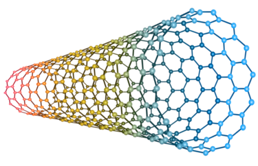

MSKCC
Position: Research AssistantTime: June 2013-May 2016
Location: New York City, NY
Starting the Summer of my freshman year in high school, up until the end of the my senior year in high school, I worked in a research lab at MSKCC. I worked in Dr. Dan Heller's lab, under Dr. Ryan Williams, studying carbon nanotubes and their usage as in vivo sensors for cancer detection. During the summer I spent anywhere from 45-50 hours a week in the lab and 20-25 hours during the school year. During this time I learned a lot of laboratory skills that I may not ever use again, but also how to commmunicate my results efficiently and an understandable manner. I spent a lot of time processing data using MATLAB and then creating visual figures to showcase results. I was a Siemens semifinalist, and was picked to be a part of the 15 project team representing NYC out of hundreds of submitted projects at the International Science and Engineering Fair.
Currently I am the second author of two papers from the laboratory. One is published in Science Advances and details a project about HE4 sensing for Ovarian Cancer. Another is has been accepted for publishing in ACS Sensors about detecting uPA for prostate cancer detection.
Check out my lab in MSKCC here

This was my research focus, carbon nanotubes! One thing that's really awesome about them
(there are actually a ton of uses for them) is that when DNA is wrapped around them,
they become fluorescent in the Near-Infrared. That's a wavelength that we can't see,
but can shine through biological material. This could potentially allow us to plant sensors
inside the body, for use as "wearable sensors".
Publications:
- Ryan M. Williams, Christopher Lee , Thomas V. Galassi, Jackson D. Harvey, Rachel Leicher, Maria Sirenko, Madeline Dorso, Janki Shah, Narciso Olvera, Fanny Dao, Douglas A. Levine, Daniel A. Heller. " Noninvasive ovarian cancer biomarker detection via an optical nanosensor implant", Published 20 April 2018, Sci. Adv. 4, eaaq1090 (2018) DOI: 10.1126/sciadv.aaq1090